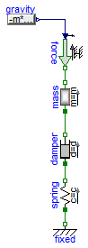
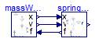

Spring damper system with a mass that leads to an artificial loop with FMUs (one FMU is the mass, the other the force element)
Information
The Spring-Damper part of this model was proposed by SIMPACK AG
as a test example for an FMU.
Extends from Modelica.Icons.ExamplesPackage (Icon for packages containing runnable examples).
Package Content
| Name |
Description |
 Reference Reference
|
Reference solution in pure Modelica |
| WithFMUsReference
|
Reference solution in pure Modelica using exactly the same structuring as in Model WithFMUs |
| WithFMUs
|
Solution with FMUs |
 FMUModels FMUModels
|
For all models in this package an FMU must be generated |
Reference solution in pure Modelica

Information
Extends from Modelica.Icons.Example (Icon for runnable examples).
Parameters
Modelica definition
model Reference
"Reference solution in pure Modelica"
extends Modelica.Icons.Example;
parameter Modelica.SIunits.Mass m=0.005
"Mass of body connected to spring";
parameter Modelica.SIunits.Position x0=2
"Initial position of mass over ground";
parameter Modelica.SIunits.TranslationalSpringConstant c=1
"Stiffness of serial spring";
parameter Modelica.SIunits.TranslationalDampingConstant d=0.1
"Damping facgtor of serial spring";
parameter Modelica.SIunits.Position y0=1.5
"Initial length of serial spring";
Modelica.SIunits.Position x
"Position at connection point of spring-damper system";
Modelica.SIunits.Velocity v
"Velocity at connection point of spring-damper system";
Modelica.SIunits.Force F
"Cut-Force at connection point of spring-damper system";
Modelica.SIunits.Position y
"Length of serial spring";
Modelica.Mechanics.Translational.Components.Fixed fixed;
Modelica.Mechanics.Translational.Components.Spring spring(
c=c,
s_rel0=y0,
s_rel(fixed=true, start=y0));
Modelica.Mechanics.Translational.Components.Damper damper(d=d);
Modelica.Mechanics.Translational.Components.Mass mass(
m=m,
s(fixed=true, start=x0),
v(fixed=true, start=0));
Modelica.Mechanics.Translational.Sources.Force force;
Modelica.Blocks.Sources.RealExpression gravity(y=-m*9.81*x);
equation
x = damper.flange_b.s;
v =
der(x);
F = damper.flange_b.f;
y = spring.flange_b.s;
connect(spring.flange_a, fixed.flange);
connect(spring.flange_b, damper.flange_a);
connect(mass.flange_a, damper.flange_b);
connect(force.flange, mass.flange_b);
connect(gravity.y, force.f);
end Reference;
Reference solution in pure Modelica using exactly the same structuring as in Model WithFMUs

Information
Extends from Modelica.Icons.Example (Icon for runnable examples).
Modelica definition
model WithFMUsReference
"Reference solution in pure Modelica using exactly the same structuring as in Model WithFMUs"
extends Modelica.Icons.Example;
FMUModels.SpringDamper springDamper;
FMUModels.MassWithGravity massWithGravity;
equation
connect(massWithGravity.x, springDamper.x);
connect(massWithGravity.v, springDamper.v);
connect(springDamper.f, massWithGravity.f);
end WithFMUsReference;
Solution with FMUs
Information
Extends from Modelica.Icons.Example (Icon for runnable examples).
Modelica definition
Automatically generated Fri Apr 25 16:23:01 2014.
 FMITest.VirtualLoops.MassSpringDamper.Reference
FMITest.VirtualLoops.MassSpringDamper.Reference